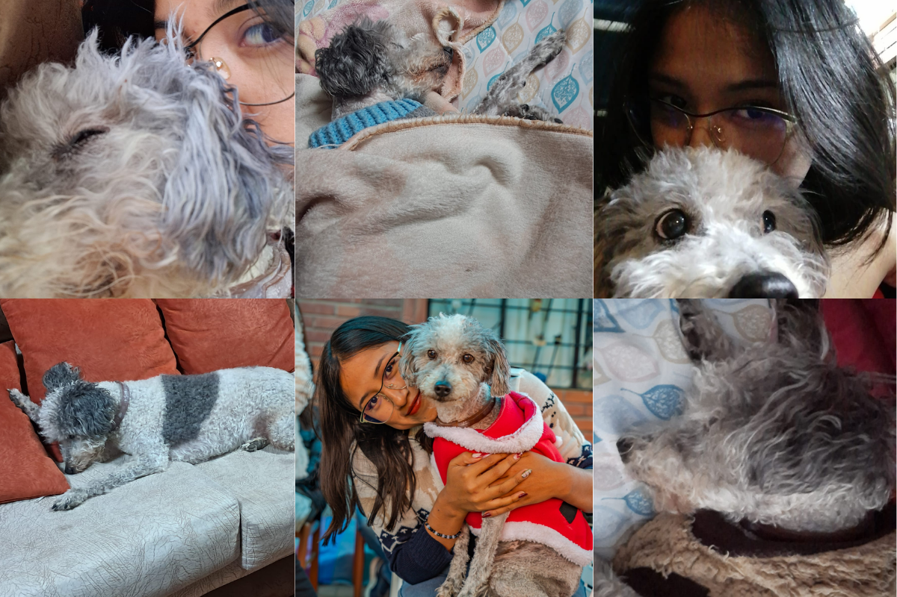
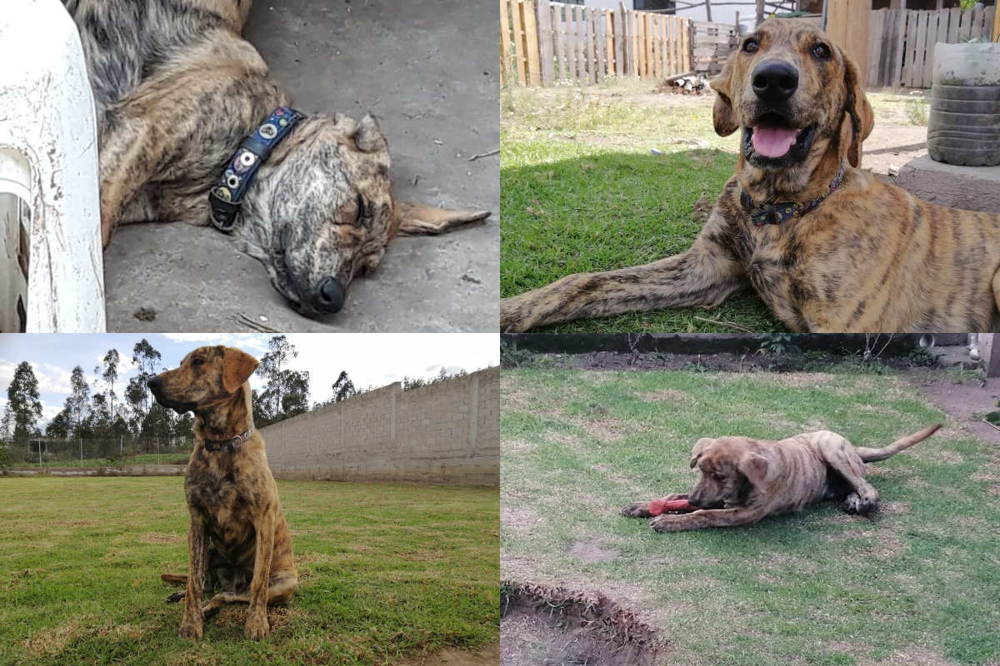
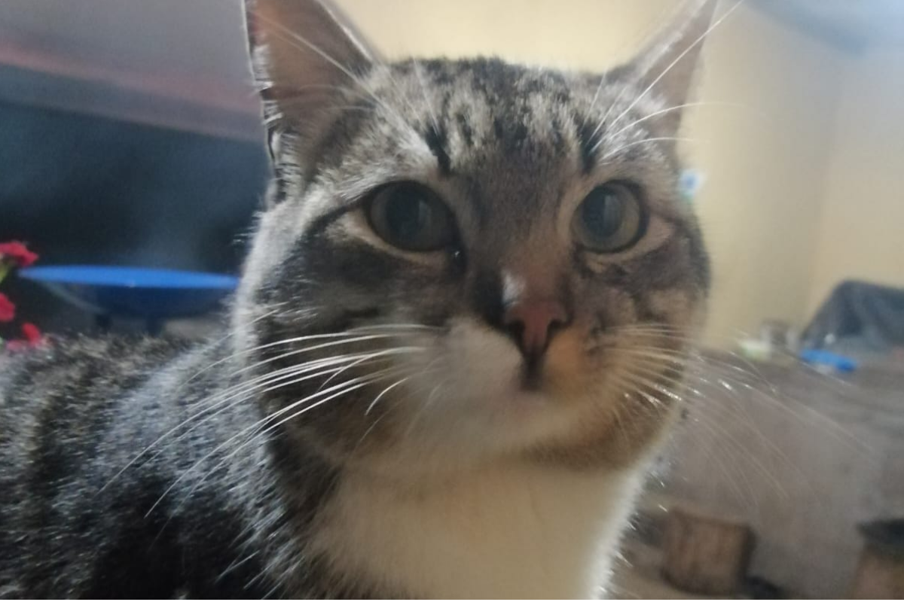
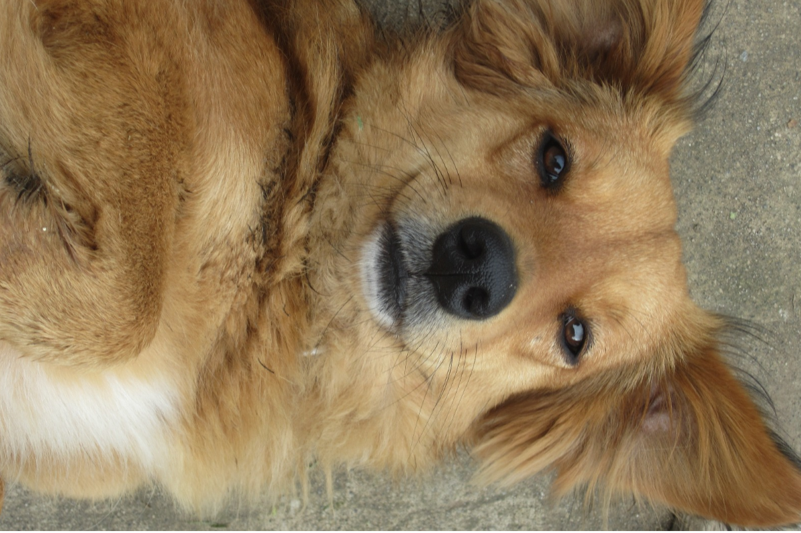

Mis mascotas son una parte importante en mi vida, cada uno llego de diferente manera a nuestra familia
Boby es el perro más consentido que conozco, y gran parte de la culpa la tiene toda nuestra familia. Llegó a nuestras vidas hace casi 11 años como un regalo para mi mamá, cuando apenas era un pequeño cachorro lleno de lana. Aunque el regalo era para ella, desde el inicio fui yo quien se encargó de cuidarlo.
A Boby le encanta dormir, jugar con su peluche de Stitch y salir a pasear. Desde que llegó a mi vida se convirtió en mi compañero de todas las noches, por eso siempre sé que al final del día estará esperándome en mi cuarto para dormir conmigo.
Yo lo vi crecer y él también me vio crecer a mí. Ha estado a mi lado desde mis años en la escuela hasta mi etapa universitaria, acompañándome en diferentes momentos de mi vida. Por eso sé que el día en que ya no esté dejará un vacío muy grande en mi corazón.
No puedo imaginar un mejor perro de compañía y, aunque ya es un poco viejito, en mi familia seguimos tratándolo como ese pequeño cachorro que llegó a nuestras vidas hace tantos años.

Rocky, “Gordo”, “Arroz” y muchos otros apodos más son algunas de las formas en que lo llamamos, él es, principalmente, nuestro “perrito de pandemia”, ya que llegó a nuestra familia hace seis años, en febrero, apenas una semana antes del confinamiento.
En ese momento, una de las cosas más difíciles fue conseguir suficiente comida para él, ya que al ser un perro de raza grande necesitaba comer grandes cantidades. Aunque oficialmente es el perro de mi hermano, entre todos nos encargamos de cuidarlo y consentirlo.
En mi familia siempre habíamos deseado tener un perro grande, pero nunca imaginamos que Rocky crecería tanto. Se ha convertido en un miembro muy querido de nuestra familia y, hasta el día de hoy, la gran cantidad de comida que necesita sigue siendo un tema que intentamos resolver entre todos.

Mini llegó a mi vida hace siete años como un regalo de mi madrina. Aunque era mi gato, con el tiempo terminó llevándose mejor con mi hermano que conmigo. Mi mamá siempre nos dice, entre bromas, que él será el primero y único gato que tendremos en la casa.
Mini es un gato completamente de hogar y disfruta mucho estar con nosotros. Aunque tiene una personalidad bastante independiente, cuando quiere puede llegar a ser muy cariñoso y cercano con nosotros.

Finalmente, Flor no es realmente nuestra perrita, pero llegó a nuestras vidas hace aproximadamente dos años. Ella pertenece a nuestros inquilinos, pero debido a que ellos pasan la mayor parte del día trabajando, Flor comenzó a acercarse poco a poco a nosotros.
Con el tiempo se hizo muy amiga de Rocky y desde entonces se volvieron inseparables. Nosotros tratamos de cuidarla lo mejor posible y darle mucho cariño, como si también fuera parte de nuestra familia. Sin embargo, cuando sus dueños regresan a casa, ella vuelve nuevamente a su hogar original.
